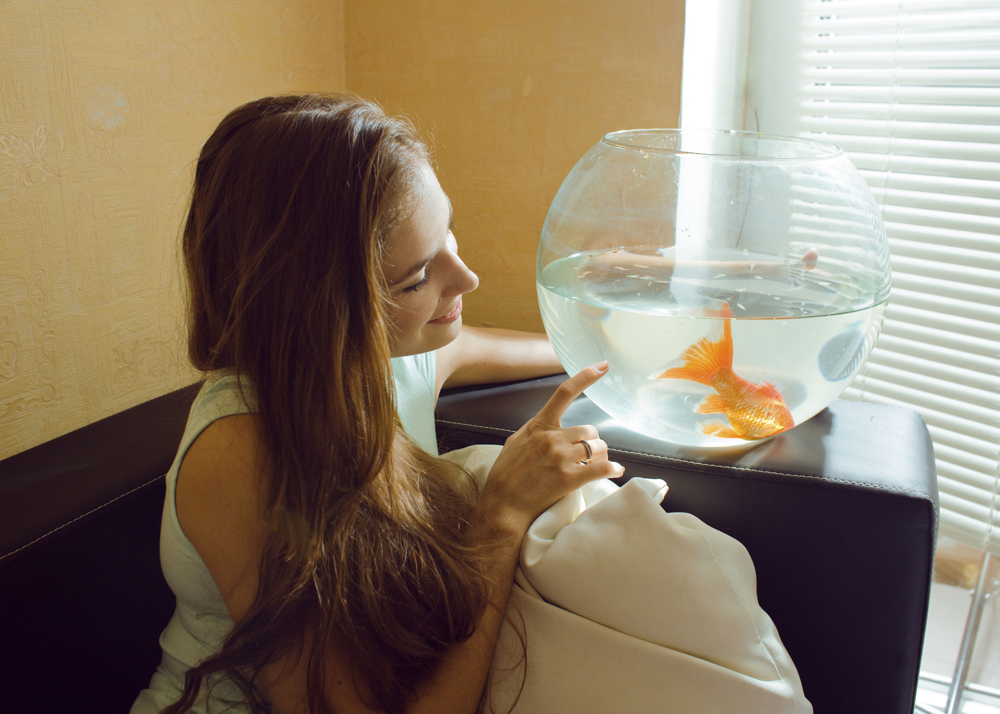

Wisdom Pet Medicine is the only clinic around that will even book pet fish for appointments. When
our 13-year old Comet goldfish, McAllister, turned from silvery white to an angry red, we called around,
urgently trying to find a veterinarian who could help. Wisdom not only got us in the same day, but also was
able to diagnose McAllister as having a severe case of septicemia.